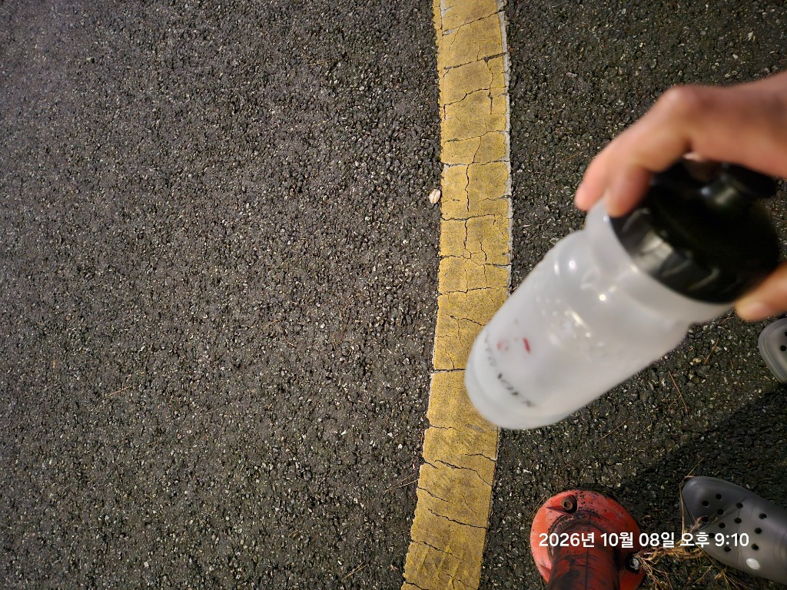

많은 러너가 체력이 부족해서라고 생각하지만, 사실은 땀으로 물이 너무 많이 빠져나갔기 때문인 경우가 많습니다. 내 몸에서 1시간에 땀이 얼마나 나오는지 직접 재는 방법과, 왜 맹물만 많이 마시면 안 되는지, 그리고 언제 얼마나 마셔야 안전한지 쉽게 정리했습니다.

📸 실전 준비물: 장거리 달리기용 물통: 1시간 이상 오래 달릴 때는 맹물만 마시기보다 염분이 들어 있는 이온음료를 챙겨 15~20분마다 조금씩 나누어 마시는 것이 좋습니다.
1. 물이 조금만 빠져도 심장이 빨리 뛰는 이유
우리 몸은 달릴 때 높아진 체온을 식히기 위해 땀을 냅니다. 그런데 이 땀은 결국 피 속의 수분에서 빠져나오는 것입니다.
⚠️ 몸무게의 2%만 땀으로 빠져도 생기는 일
- 피가 걸쭉해지고 양이 줄어듭니다: 피 속 물기가 줄어 심장으로 돌아오는 피의 양이 적어집니다.
- 심장이 한 번에 뿜어내는 피가 줄어듭니다: 그래서 같은 속도로 달려도 심박수가 분당 10~20회나 더 빨리 뜁니다.
- 다리에 쥐가 나고 금방 지칩니다: 다리 근육으로 가는 산소가 부족해져 후반에 갑자기 힘이 빠집니다.
2. 내 1시간 땀 배출량 직접 계산해 보기
사람마다 체중과 날씨에 따라 1시간에 흘리는 땀의 양이 500ml에서 2,000ml까지 크게 다릅니다. 아래 공식으로 한 번만 재 보면 내가 달릴 때 물을 얼마나 마셔야 하는지 정확히 알 수 있습니다.
📐 1시간 땀 배출량 계산 공식
1시간 땀 배출량(L) = [달리기 전 체중(kg) - 달린 후 체중(kg) + 마신 물(L)] ÷ 달린 시간(시간)
- 1시간 달리기 전 체중: 70.0kg / 달린 직후 체중: 69.2kg (0.8kg 줄어듦)
- 달리는 동안 마신 물: 0.2L (200ml)
➔ 내 1시간 땀 배출량 = (70.0 - 69.2 + 0.2) ÷ 1 = 1.0L (1,000ml)
➔ 달릴 때는 이 양의 60~80% 정도(1시간에 600~800ml)를 15분마다 한 컵(150~200ml)씩 나누어 마시는 것이 좋습니다.
3. 땀 흘린 뒤 맹물만 많이 마시면 위험한 이유
땀을 흘릴 때는 물만 빠져나가는 것이 아니라 땀 1리터당 약 800~1,500mg의 소금기(나트륨)도 함께 빠져나갑니다. 목이 마르다고 소금기 없는 맹물만 잔뜩 마시면 피 속 염분 농도가 너무 묽어져서 오히려 위험해질 수 있습니다.
| 구분 | 물 부족 (탈수) | 염분 부족 (저나트륨혈증) |
|---|---|---|
| 원인 | 물을 너무 안 마셔서 생김 | 땀을 많이 흘린 뒤 맹물만 너무 많이 마셔서 생김 |
| 초기 증상 | 입이 마르고 소변 색이 진해짐 | 머리가 지끈거리고 속이 울렁거림, 손가락이 부음 |
| 위험성 | 다리 쥐, 어지러움, 속도 저하 | 심하면 어지러워 쓰러지거나 의식이 흐려질 수 있음 |
4. 오래 달릴 때 안전하게 물 마시는 4가지 수칙
💧 실전 물 & 이온음료 마시는 법
- 달리기 2시간 전 미리 마시기: 500ml 정도의 물을 천천히 마셔 두고, 소변 색이 연한 노란색인지 확인합니다.
- 목마르기 전에 15~20분마다 한 모금씩: 갈증이 느껴질 때는 이미 물이 부족해진 뒤입니다. 15~20분마다 150~200ml씩 규칙적으로 마시세요.
- 1시간 이상 달릴 때는 염분 챙기기: 물 500ml에 전해질 발포정 1알을 타거나, 시판 이온음료를 함께 마셔 소금기를 보충해 주세요.
- 너무 단 음료는 피하기: 당분이 너무 진한 주스나 탄산음료는 배에서 흡수가 느려 속이 출렁거릴 수 있습니다. 일반 이온음료 농도가 가장 적당합니다.
🫀 탈수로 심박수가 치솟지 않는 내 안전 심박수 구간은?
내 체력에 맞는 심박수 구간을 확인하고, 무리한 속도로 인한 조기 탈수와 체력 방전을 막아 보세요.
🫀 내 심박수 구간 계산해 보기 ›- Sawka, M. N., et al. (2007). American College of Sports Medicine position stand. Exercise and fluid replacement. Medicine & Science in Sports & Exercise, 39(2), 377-390.
- Hew-Butler, T., et al. (2015). Statement of the Third International Exercise-Associated Hyponatremia Consensus Development Conference, Carlsbad, California, 2015. British Journal of Sports Medicine, 49(22), 1432-1446.
- Coyle, E. F. (2004). Fluid and fuel intake during exercise. Journal of Sports Sciences, 22(1), 39-55.